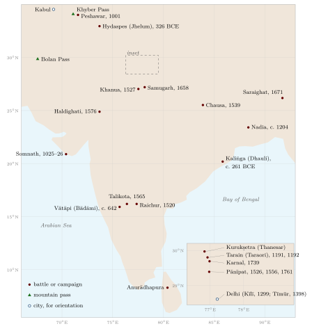

Chapter 1: Introduction: War, Warriors and the Study of Indian Military Traditions¶
1.1 The Scope of This Volume¶
War has been part of South Asian history for as long as there is evidence for that history, and the subcontinent has produced a large literature about it: hymns that praise victorious chariot-fighters, an epic whose central event is an eighteen-day battle, a treatise on statecraft that devotes whole books to campaigns, sieges and secret operations, codes of law that set out how a king should fight, Persian chronicles of conquest, Marathi and Rajasthani ballads of heroes, and the reports of Greek, Chinese, Arab, Portuguese and British observers. Alongside the literature stand the physical remains — forts, hero-stones, weapons in museums — and a number of living practices, from wrestling in earthen pits to the sword-and-shield exercises of Kerala and Punjab.
This volume surveys that material. Its title joins two Sanskrit words. Yuddha means battle or war in general. Dhanurveda, literally “knowledge of the bow”, is the traditional name for the science of arms, counted in some later lists as one of the four “subsidiary Vedas” (upaveda). The two words mark the two halves of the subject. One half is collective and political: how states raised and paid armies, how campaigns and sieges were conducted, how wars were justified and limited. The other half is individual: how warriors were trained, what weapons they used, what ideals they were taught, and what became of the warrior’s arts when the world that sustained them changed.
The book is organised as follows. Chapters 2 to 7 deal with early India and with the classical sources: the history of warfare to about 600 CE, the texts that discuss war (and how late or early they are), archery and the dhanurveda manuals, weapons and military technology, the elephants, horses and chariots on which Indian armies depended, and the theory of strategy, battle arrays and intelligence. Chapters 8 and 9 narrate the history of war from the early medieval kingdoms through the Turkic conquests, the Delhi Sultanate, Vijayanagara, the Mughals, the Ahoms, the Marathas, the Sikhs and Mysore. Chapters 10 and 11 treat fortification and naval warfare. Chapter 12 examines the ethics of war — dharmayuddha — as the texts state it, with the exceptions the texts themselves allow, and as it was practised. Chapters 13 to 16 turn to the warrior: education and martial culture, wrestling and unarmed combat, the regional martial arts, and women in war. Chapter 17 follows the hired soldiers of the military labour market from the fifteenth century to 1857, and Chapter 18 the regular armies that Mysore, the Marathas, Hyderabad, the Sikh kingdom, Nepal and other states built between 1740 and 1849. Chapter 19 describes the colonial conquest, the sepoy armies of the East India Company and the disarming of Indian society, and Chapter 20 the modern revival of the martial arts, the much-discussed question of Indian influence on the martial arts of other Asian countries, and the conclusions of the volume.
1.2 Sources and Their Limits¶
1.2.1 Texts¶
The written sources for Indian warfare are rich but uneven, and each kind has its own biases. The Vedic hymns, composed in their core between about 1500 and 1200 BCE, are poetry addressed to gods; they mention chariots, bows, forts and battles, but they are not descriptions of campaigns (Singh 1965; Jamison and Brereton 2014). The two Sanskrit epics, the Mahābhārata and the Rāmāyaṇa, grew over several centuries, roughly between 400 BCE and 400 CE, and their battle books combine conventions of heroic poetry with much that is fantastic (Brockington 1998). They are invaluable for ideals and vocabulary but cannot be read as eyewitness accounts of a historical war.
The Arthaśāstra attributed to Kauṭilya is the single most important Sanskrit source on military organisation. Tradition identifies its author with Cāṇakya, minister of Candragupta Maurya, c. 300 BCE; but the text as we have it is a composite work, and Patrick Olivelle, its most recent translator, dates it between about 50 BCE and 300 CE (Olivelle 2013). Its value lies in its practical, administrative outlook, but it is a manual of what a king should do, not a record of what any particular king did. The dharmaśāstras, above all the Mānava Dharmaśāstra (Manusmṛti, c. 2nd century CE), state rules for the conduct of kings and of war (Olivelle 2005). The texts that call themselves dhanurveda, and the military chapters of encyclopaedic Purāṇas such as the Agni Purāṇa, are in their present form medieval or later, as Chapter 3 explains.
From the thirteenth century onwards Persian chronicles and administrative manuals — histories of the Delhi sultans, Bābur’s memoirs, Abū’l-Faẓl’s Āʾīn-i Akbarī — provide detailed narrative and statistical material, with the biases of court historians (Thackston 1996; Blochmann 1873). Regional literatures add Tamil war poetry, Rajasthani heroic poetry, Marathi chronicles (bakhar) and ballads (povāḍā), Assamese buraṅjī chronicles, and Sikh accounts. Foreign observers — Megasthenes and the Alexander historians, Chinese pilgrims, Arab geographers, Marco Polo, Portuguese and Dutch merchants, British officers — describe what they saw, often with misunderstanding but sometimes with precision.
1.2.2 Inscriptions and material evidence¶
Inscriptions are the most reliable source for early and medieval India. Aśoka’s Thirteenth Rock Edict describes the Kaliṅga war in the emperor’s own words (Hultzsch 1925); royal eulogies (praśasti) such as Samudragupta’s Allahabad pillar inscription or the Aihoḷe inscription of Pulakeśin II list conquests; copper-plate grants and temple inscriptions record military officers, gifts to soldiers and the deaths of heroes. Thousands of hero-stones (vīrakal, pāliyā, naṭukal) commemorate individual warriors who died defending cattle, villages or their lords.
Archaeology provides fortifications, weapons and depictions of warfare in sculpture and painting. Museum collections of arms and armour in India and abroad are rich for the period after about 1500 and thin for earlier centuries, since iron rusts and wood and leather perish (Elgood 2004; Egerton 1880).
1.2.3 Living practice¶
The martial arts that are still practised are a further source, but a difficult one. Practitioners often trace their arts to gods, sages or remote antiquity. Historians cannot simply accept such genealogies, nor can they dismiss them; they have to compare oral tradition with dated evidence. Phillip Zarrilli’s study of kaḷarippayaṟṟu, which combines fieldwork with historical research, is a model of how this can be done (Zarrilli 1998); Joseph Alter’s ethnography of North Indian wrestling is another (Alter 1992).
1.3 The Archaeology of War¶
Archaeology contributes in several ways to the study of Indian warfare, though battlefield archaeology, which has transformed the study of some European battles, has scarcely begun in India. Fortifications are the most visible archaeological evidence: the walls of Harappan cities, the ramparts of early historic towns, and the thousands of medieval and early modern forts discussed in Chapter 10. Weapons are found in hoards and burials. The “copper hoards” of the Ganges–Yamuna region, dating to the second millennium BCE, include flat axes, harpoons and swords with distinctive antenna-shaped hilts, whose purpose — weapons, ritual objects or both — is debated. The megalithic burials of the Deccan and south India, from the early first millennium BCE onwards, contain many iron weapons, including swords, daggers, spearheads and arrowheads, as well as horse equipment. Sculpture, coins and painting provide images of soldiers, weapons and battles. Skeletal remains with signs of violent injury have been studied at a few sites, but such evidence is scarce.
The interpretation of archaeological evidence for war requires caution. Walls may have been built for prestige or flood protection as well as defence; weapons in graves may be symbols of status rather than evidence of use; and images follow artistic conventions. Combined with texts and inscriptions, however, archaeology provides an indispensable check on literary accounts, and it is the only source for the long periods and the many communities that left no written record.
1.4 Historiography¶
Modern study of Indian warfare began in the colonial period. Gustav Oppert’s On the Weapons, Army Organisation, and Political Maxims of the Ancient Hindus (1880) collected Sanskrit passages on weapons and argued, on weak evidence, that the ancient Indians had known gunpowder (Oppert 1880). E. Washburn Hopkins’s long study of the warrior class in the Sanskrit epic (1889) remains useful for its thorough collection of epic material (Hopkins 1889). In the first half of the twentieth century Indian scholars wrote general accounts of ancient Indian warfare: V. R. Ramachandra Dikshitar’s War in Ancient India (1944) and P. C. Chakravarti’s The Art of War in Ancient India (1941) are the most substantial (Dikshitar 1944; Chakravarti 1941). Chakravarti in particular read the Sanskrit sources critically, compared them with Greek accounts, and was willing to say where Indian armies had been weak. Sarva Daman Singh’s Ancient Indian Warfare, with Special Reference to the Vedic Period (1965) is the standard study of the early material (Singh 1965).
These writers worked partly in reaction to colonial stereotypes of an unwarlike or militarily backward India, and nationalist writing sometimes overcorrected, presenting every Indian defeat as the result of treachery and every text as evidence of scientific foresight. More recent scholarship has asked different questions. Dirk Kolff showed that north Indian soldiering between 1450 and 1850 formed a vast “military labour market” in which peasants became soldiers for pay and identities such as “Rajput” were often acquired through service rather than fixed by birth (Kolff 1990). Jos Gommans placed Mughal warfare in the context of the arid frontier, the horse trade and the movement of armies along the “high roads” of empire (Gommans 2002). Thomas Trautmann traced the history of the war elephant from its Indian origins to its spread across Eurasia (Trautmann 2015). Kaushik Roy has written comprehensive surveys of warfare in South Asia and of the relationship between Hindu thought and the ethics of war (Roy 2004, 2011, 2012). Peter Jackson’s study of the Delhi Sultanate, Stewart Gordon’s of the Marathas and Seema Alavi’s of the Company’s sepoys are among many regional and period studies used in this volume (Jackson 1999; Gordon 1993; Alavi 1995).
1.5 The Geography of War¶
The geography of the subcontinent shaped its wars in ways that remained remarkably constant over three thousand years. Figure 1.1 shows the passes of the north-west and some of the battlefields named in the narrative chapters; the forts, the coasts and the Company’s wars have maps of their own (Figures 10.10, 11.2 and 19.2).

1.5.1 The north-western passes and the arid corridor¶
To the north, the Himalaya formed a barrier that armies crossed only with great difficulty; no major invasion of India came across the high Himalaya in the period covered by this book. To the north-west, however, the mountains of Afghanistan and Baluchistan are crossed by passes — the Khyber, the Kurram, the Gomal, the Bolan — that led from the Iranian plateau and Central Asia into the Indus valley. Through them came the Achaemenid Persians, Alexander, the Indo-Greeks, Śakas, Kuṣāṇas and Hūṇas, the Ghaznavids and Ghurids, the Mongols, Tīmūr, Bābur, Nādir Shāh and Aḥmad Shāh Durrānī. They also carried trade, pilgrims and ideas, and above all horses (Chapter 6).
Beyond the passes, an arid and semi-arid zone stretches from the Punjab and Sindh through Rajasthan and Gujarat and into the western Deccan. Jos Gommans has argued that this “arid zone” was the key to Indian military history in the medieval and early modern periods: it supported pastoral peoples who bred horses and camels, supplied mobile cavalry, and formed a corridor along which conquerors from Central Asia could move into the heart of India and down into the Deccan (Gommans 2002). The capitals of north Indian empires — Delhi, Agra, Lahore — lay where this arid corridor met the fertile Ganges plain.
1.5.2 The Ganges valley¶
The Ganges plain, with its dense agricultural population and its great rivers, was the economic core of most north Indian empires, from Magadha and the Mauryas to the Guptas, the Delhi Sultanate and the Mughals. Its wealth paid for armies, and its peasant population supplied soldiers (Kolff 1990). Its rivers were both obstacles and highways: armies crossed them on bridges of boats, and the rivers carried supplies and river fleets. Control of the middle Ganges, with its capitals at Pāṭaliputra, Kanauj and later Delhi and Agra, was the prize of many wars.
1.5.3 Forests and hills¶
To the south and east of the Ganges plain lay the forests and hills of central India, eastern India and the north-east. These were the homelands of peoples whom Sanskrit texts called āṭavika, “forest dwellers”, and the habitat of the wild elephants that kings captured for war (Trautmann 2015). Forest peoples served kings as soldiers, guides and elephant-catchers, and they also raided settled lands and resisted conquest; Aśoka’s Thirteenth Rock Edict contains a warning to them. Armies found the forests difficult to penetrate, and many of the longest-lasting independent states — the Gonds of central India, the Ahoms of Assam, the hill kingdoms of the north-east — drew strength from forest and hill terrain.
1.5.4 The Deccan and the south¶
The Deccan plateau, with its flat-topped hills and its long dry season, was the land of hill forts and of cavalry warfare. Its northern edge, along the Vindhya and Satpura ranges and the Narmada river, formed a frontier between north and south that several north Indian empires failed to cross: Harṣa was stopped on the Narmada by Pulakeśin II, and the Mughals needed nearly a century (from the 1590s to 1687) to subdue the Deccan sultanates and never finally defeated the Marathas. The far south, with its rich river deltas, its long coastline and its ancient Tamil kingdoms, developed military traditions of its own, including the naval expeditions of the Cōḻas (Chapter 11).
1.5.5 The monsoon and the campaigning season¶
The monsoon governed the calendar of war. From June to September the rains turned roads to mud, swelled rivers, spread disease and made campaigning difficult. Campaigns therefore normally began after the rains, in October or November, when the harvest was in and grain and fodder were available, and ended before the next monsoon. The festival of Daśahrā, at the end of the rains, marked in many kingdoms the beginning of the campaigning season (Chapter 13). Armies caught by the monsoon could suffer disaster: the Mughal general Mīr Jumla’s army in Assam in 1662–63 was devastated by rain and disease (Chapter 9).
1.5.6 The coasts¶
The subcontinent’s long coastline was the site of a maritime trade that linked India to the Persian Gulf, the Red Sea, East Africa, Southeast Asia and China for more than two thousand years. Coastal states taxed and protected this trade, and some — the Cōḻas, the sultans of Gujarat, the Zamorins of Calicut, the Marathas — built fleets. But the sea was also the route by which, from 1498, European ships armed with cannon arrived, and naval power proved to be one of the foundations of the East India Company’s eventual conquest.
1.6 War and the Economy¶
Armies were expensive, and every Indian theorist of the state recognised the connection between military power and wealth. The Arthaśāstra states that the army has its root in the treasury, and it devotes most of its length to the administration of revenue, trade, mines, forests and agriculture (Olivelle 2013). Medieval and early modern states devised a series of institutions to pay their armies: the assignment of revenue to military commanders (iqṭā in the Delhi Sultanate, amaram among the nāyakas of Vijayanagara, jāgīr under the Mughals), the payment of soldiers in cash, and the levying of tribute from subordinate rulers (Jackson 1999; Stein 1989; Richards 1993).
The demands of war shaped the economy in turn. Armies on campaign consumed huge quantities of grain and fodder, supplied by itinerant grain carriers and by the markets that travelled with them (Chapter 6); they employed artisans to make weapons, saddles, tents and uniforms; they drew on bankers to advance money against future revenue; and they devastated the lands through which they passed. In the eighteenth century, the competition among Indian states and the European companies to pay ever larger and more expensive armies — what historians call “military fiscalism” — placed great strain on the peasantry and the banking networks of India, and the state that could best mobilise money, the East India Company, won (Roy 2011). How the Indian states and the Company met these costs is examined in Section 18.12.
1.7 India in the History of War¶
Indian military history has often been studied in isolation, as if the subcontinent were a world of its own. In fact, India was part of the Eurasian world of war from the beginning. The horse and the chariot came to India from the steppes in the second millennium BCE, as they came to China, Mesopotamia and Egypt. The war elephant, perfected in India, spread to the Persian, Hellenistic and Carthaginian armies and to Southeast Asia (Trautmann 2015). The mounted archer of the steppes transformed Indian warfare as he transformed that of China, Iran and eastern Europe. Gunpowder, invented in China, reached India through Central Asia and the Ottoman and Persian world. The flintlock and the drilled infantry battalion came from Europe. Indian steel, Indian elephants, Indian textiles and Indian military ideas travelled outwards.
Seen in this light, many features of Indian warfare that are sometimes presented as unique are better understood as Indian versions of common patterns: the four-arm army, the hill fort, the ethic of the warrior aristocracy, the codes of fair fighting, the hero-stone, the reliance on mercenaries and on the military labour of peasants. What was distinctive was the particular combination of these elements, shaped by Indian geography, society and religion. Comparison with other parts of the world helps to identify what was genuinely Indian and to avoid both the exaggeration of Indian uniqueness and the neglect of Indian achievement.
1.8 A Note on Numbers¶
Readers of Indian military history soon meet very large numbers. The Mahābhārata says that nearly four million fighting men, horses, elephants and chariots met at Kurukṣetra. Greek writers report Nanda and Mauryan armies of hundreds of thousands. Xuanzang credits Harṣa with tens of thousands of elephants. Persian chronicles describe armies of a hundred thousand horsemen and more, and Bābur says that he defeated a hundred thousand men with twelve thousand.
Such numbers must be treated with caution. Epic numbers are poetic and symbolic. Foreign observers were often told what their hosts wished them to believe. Court chroniclers had every reason to exaggerate the size of the enemy and the scale of the victory. Even administrative figures, such as the numbers of horsemen that Mughal officers were supposed to maintain, often bore little relation to the numbers actually mustered. Large armies were certainly raised — the Mughal armies of the seventeenth century were among the largest in the world — but precise figures for particular battles are rarely reliable. This volume gives numbers only with their source, and readers are encouraged to treat them as indications of scale rather than counts.
1.9 Some Myths This Volume Does Not Repeat¶
Popular writing on Indian military traditions contains a number of claims that do not survive examination. They are listed here so that readers can recognise them; each is discussed further in the relevant chapter.
- Divine weapons as ancient technology.
- The epics describe weapons invoked by spells (astra) that burn, flood or blind whole armies, and the Rāmāyaṇa describes the flying chariot Puṣpaka. These are literary and religious motifs. There is no textual or archaeological basis for the claim that they record nuclear weapons, guided missiles or aircraft (Chapter 4).
- An unbroken Vedic science of war.
- No treatise on dhanurveda survives from the Vedic period. The surviving texts with that name are medieval or later compilations, and several were attributed to ancient sages long after they were written (Chapter 3).
- Bodhidharma and kung fu.
- The legend that the Indian monk Bodhidharma taught martial exercises at the Shaolin monastery first appears in the seventeenth century, about eleven hundred years after his supposed lifetime; it is not history (Chapter 20).
- “The mother of all martial arts”.
- Kaḷarippayaṟṟu in its known form is documented from roughly the twelfth century onward, and no Indian art can be shown to be the source of all others (Chapter 15).
- Tipu Sultan’s rockets as the origin of rocketry.
- The iron-cased rockets of Mysore were effective weapons and they influenced William Congreve’s rockets in Britain. They did not originate rocketry, which was known in China centuries earlier (Chapter 5).
1.10 Periods and Dates¶
The periods used in this volume (Table 1.1) are conventional and approximate. Dates follow the mainstream scholarly consensus; where a traditional date differs, it is identified as traditional.
| Period | Military developments (selected) |
|---|---|
| Harappan, c. 2600–1900 BCE |
Walled cities and citadels; copper and bronze blades, arrowheads; no clear evidence of the horse or the spoked chariot |
| Early Vedic, c. 1500–1200 BCE |
Horse-drawn spoked chariot, bow (possibly composite); tribal warfare and cattle raids (gaviṣṭi) |
| Later Vedic and early historic, c. 1200–300 BCE |
Iron weapons spread; kingdoms and the sixteen mahājanapadas; rise of Magadha; war elephants |
| Maurya, c. 321–185 BCE |
First large empire; standing army; Kaliṅga war (c. 261 BCE) |
| c. 200 BCE–600 CE | Indo-Greek, Śaka, Kuṣāṇa, Sātavāhana, Gupta and Hūṇa wars; cavalry and horse-archery from Central Asia; chariot obsolete |
| Early medieval, c. 600–1200 |
Regional kingdoms (Cāḷukya, Pallava, Rāṣṭrakūṭa, Pratihāra, Pāla, Cōḻa); Rajput clans; Cōḻa naval raids; Ghaznavid raids |
| Sultanate, 1206–1526 |
Turkic and Afghan cavalry; iqṭā assignments; Mongol defence; Bahmanī and Vijayanagara wars; gunpowder from the fifteenth century |
| Mughal and successor states, 1526–1800 |
Field artillery and matchlocks; manṣabdārī system; Ahom, Maratha, Sikh and Mysore armies; European companies |
| Colonial, 1757–1947 |
Company sepoy armies; conquest of Indian states; 1857; “martial races” recruitment; Arms Act 1878 |
1.11 Recurring Themes¶
Several themes run through the chapters that follow.
Military labour.
For most of Indian history, armies were assembled from many sources: royal guards, the levies of subordinate chiefs, mercenary bands, forest peoples, nomadic cavalry and peasants who took up arms for a season. The ideal of a hereditary warrior caste, the kṣatriya, coexisted with a reality in which soldiers came from almost every social group. Kolff’s study of the north Indian military labour market is the clearest demonstration of this (Kolff 1990) (Chapter 17), and the same pattern can be seen in the epics’ references to hired soldiers (bhṛta) and in the Arthaśāstra’s list of troops drawn from different sources.
Frontiers and animals.
Indian warfare was shaped by geography. The arid zone running from Sindh and Rajasthan into the Deccan supported horse-breeding pastoralists and was the corridor of conquest from Central Asia (Gommans 2002). The forests of central and eastern India supplied elephants, which were captured rather than bred and were a royal monopoly (Trautmann 2015). Most good war-horses were imported, by land from Central Asia and by sea from Arabia and Persia (Digby 1971). The availability of these animals, more than any doctrine, explains much of Indian military history.
Ideal and practice.
The texts describe an ideal of righteous war (dharmayuddha) with rules protecting non-combatants and fallen enemies. They also describe, often in the same works, deception, night attacks, assassination and the use of spies. Chapter 12 examines both, as well as the evidence of what armies actually did.
Exchange.
Indian armies adopted new weapons, animals and methods wherever they found them: the chariot from the Bronze Age world, the elephant from their own forests, horse-archery and the stirrup-equipped cavalry of the steppe, gunpowder artillery from the Ottoman and Persian world, and European drill and flintlocks in the eighteenth century. In turn, Indian elephants, steel, textiles and ideas travelled outward. A purely nativist account of Indian military history misses most of what is interesting about it.
Caste, gender and community.
Military service, the right to bear arms and the honours of warriors were distributed unequally. The dharmaśāstras reserved warfare in principle for the kṣatriya, though they allowed others to fight in emergencies; epic stories such as those of Ekalavya and Karṇa show how birth could bar access to training (Chapter 13). Women appear as rulers and commanders, as defenders of forts, and as victims of war, including in the mass self-immolations (jauhar) of besieged Rajput forts, which this volume describes without romanticising (Chapter 16). Colonial recruitment policy later froze some communities into “martial races” and excluded others (Chapter 19).
1.12 Dhanurveda among the Branches of Knowledge¶
Indian scholars classified knowledge in many ways, and the science of arms found a place in several schemes. In some later lists the four Vedas are each paired with a “subsidiary Veda” (upaveda): medicine (āyurveda) with the Ṛgveda, the science of arms (dhanurveda) with the Yajurveda, music (gāndharvaveda) with the Sāmaveda, and either statecraft (arthaśāstra) or architecture (sthāpatyaveda) with the Atharvaveda. The best-known statement of this scheme is in the Prasthānabheda of the sixteenth-century Advaita scholar Madhusūdana Sarasvatī, which surveys the eighteen branches of knowledge (vidyāsthāna) and gives the science of arms a brief entry among them. Similar classifications appear in other late texts.
These schemes are important as evidence of how learned brahmins organised knowledge and how they sought to give practical arts the prestige of association with the Veda. They are not evidence that a body of military science was transmitted alongside the Vedas from the Vedic period. The Vedic texts themselves contain no treatise on arms, and dhanurveda becomes a familiar name for a body of learning only in later literature, notably the epics, where Droṇa and other teachers are masters of it. As Chapter 3 explains, the surviving texts of dhanurveda are medieval or later.
The Arthaśāstra offers a different classification. It recognises four sciences that a king must learn: philosophy (ānvīkṣikī), the three Vedas (trayī), economics (vārttā) and government (daṇḍanīti), the last including the use of force (AŚ 1.2–4) (Olivelle 2013). In this scheme the conduct of war belongs to the science of government, together with law, administration and foreign policy, rather than forming a separate science of its own.
1.13 Military Knowledge and the Indian Knowledge Systems¶
This volume is part of a series on Indian knowledge systems, and it is fair to ask in what sense the subject of this book is “knowledge”. Much military knowledge in India, as elsewhere, was practical: it was learned by doing, transmitted from teacher to pupil and from father to son, and rarely written down. The Arthaśāstra’s administrative theory, the epics’ reflections on the ethics of war, the technical literatures of elephants, horses and medicine, the metallurgical skill of the smiths who made crucible steel, the engineering of forts and their water systems, and the body knowledge of wrestlers and martial artists are all forms of knowledge, but of very different kinds.
Treating them as “Indian knowledge systems” has value if it encourages their serious study. It also carries a risk: the temptation to present every practice as a “science”, every text as older than it is, and every achievement as unique or unprecedented. The approach of this volume is to take Indian military knowledge seriously by subjecting it to the same historical and critical scrutiny that scholars apply to other traditions. That means dating texts, testing claims against evidence, comparing Indian practices with those of other societies, and acknowledging both achievements and failures. Respect for a tradition is better shown by understanding it accurately than by exaggerating it.
1.14 The Martial Arts¶
India has many living martial traditions: wrestling (kuśtī, earlier mallayuddha) across the north and west; kaḷarippayaṟṟu in Kerala; silambam and the vital-point art of varmakkalai in Tamil Nadu; gatka among Sikhs; huyen langlon (thang-ta) in Manipur; and many more local forms of stick, sword and shield play. They differ greatly in history, in social setting and in the evidence available for their past. Some are documented in medieval texts; others are known mainly from nineteenth- and twentieth-century descriptions and reconstructions.
Two cautions apply throughout. First, the claims made for these arts by modern promoters — that they are thousands of years old, that they are the source of other Asian martial arts, or that their knowledge of the body’s vital points (marma, varmam) has been confirmed by neuroscience — are reported here as claims and examined against the evidence. Second, this volume describes these arts historically. It does not give instruction in techniques intended to injure, and it treats the therapeutic claims of traditional vital-point medicine as traditional claims.
1.15 A Guide to the Chapters¶
The volume is arranged partly by period and partly by theme. Readers who want a chronological narrative may read Chapters 2, 8, 9, 18 and 19 in sequence; those interested in a particular subject may turn directly to the thematic chapters. Table 1.2 summarises the plan.
| Ch. | Subject | Principal sources |
|---|---|---|
| 2 | Warfare to c. 600 CE; the origin of chess | Archaeology, Vedic hymns, epics, Greek writers, inscriptions, Tamil poetry |
| 3 | The literature of war | Sanskrit, Tamil, Persian and regional texts; inscriptions; foreign observers |
| 4 | Archery and dhanurveda | Vedic hymns, epics, Arthaśāstra, Agni Purāṇa and later dhanurveda texts; surviving bows; painting |
| 5 | Weapons and technology | Surviving arms, sculpture, metallurgical studies, Persian and European accounts |
| 6 | Chariots, elephants and horses | Vedic and epic texts, elephant and horse treatises, Mughal records |
| 7 | Strategy and intelligence; an Indian strategic tradition? | Arthaśāstra, later nīti works, Mughal records, modern strategic writing |
| 8 | Warfare c. 600–1526 | Inscriptions, Persian chronicles, regional histories |
| 9 | Warfare 1526–1800 | Persian, Marathi, Assamese and Punjabi sources; European accounts |
| 10 | Forts and sieges | Surviving forts, texts on fortification, chronicles |
| 11 | Naval warfare | Inscriptions, Portuguese and Company records, regional chronicles |
| 12 | The ethics of war | Dharmaśāstra, epics, Tamil poetry, Buddhist, Jain, Islamic and Sikh sources |
| 13 | Warrior culture | Texts on education, inscriptions, hero-stones, painting, ballads |
| 14 | Wrestling | Mānasollāsa, ethnography of the akhāṛā, sporting records |
| 15 | Regional martial arts | Ethnography, regional histories, modern practice |
| 16 | Women and war | Inscriptions, chronicles, ballads, colonial records |
| 17 | The military labour market | Persian chronicles and newsletters, Maratha records, Company records, ballads |
| 18 | Regular armies, 1740–1849 | Company and court records, officers’ memoirs, Persian and Marathi sources |
| 19 | The colonial era and its legacy in the armed forces | Company and Crown records, sepoy studies, military histories |
| 20 | Revival, myths and conclusions | Modern practice, sport, popular culture, scholarship |
1.16 This Volume and the Series¶
Military traditions touch many other fields of Indian knowledge, and several subjects mentioned in this volume are treated more fully elsewhere in the series Bhāratīya Jñāna Paramparā. The Arthaśāstra, the dharmaśāstras and the theory of kingship are discussed in Volume 18, Rājanīti and Dharmaśāstra. The epics and Purāṇas, whose battle narratives are used here, are the subject of Volume 7, Itihāsa–Purāṇa. The medical knowledge of wounds and vital points belongs to Volume 13, Āyurveda; metallurgy, including iron, steel and the chemistry of gunpowder, to Volume 14, Rasāyana; the architecture of forts and cities to Volume 16, Vāstu–Śilpa; maritime trade and seafaring to Volume 19, Vāṇijya and Samudra; the education of princes and the gymnasium to Volume 22, Manas and Śikṣā; and the relations between martial arts, dance and theatre to Volume 9, Saṅgīta–Nāṭya.
1.17 Conventions¶
Sanskrit, Pali and Prakrit words are given in the International Alphabet of Sanskrit Transliteration (IAST); the anusvāra is written ṃ. Tamil and Malayalam words follow the standard scholarly transliteration (with ḻ, ṟ and ṉ) where they are technical terms, and familiar spellings for names of places and modern institutions. Persian and Urdu terms are given in a simplified transliteration. Dates are CE unless marked BCE. The glossary at the end of the volume explains the principal technical terms.
Further Reading¶
-
Chakravarti (1941) and Singh (1965): the best older studies of early Indian warfare.
-
Roy (2004): a survey of South Asian warfare to the present.
-
Gommans (2002) and Kolff (1990): the essential modern studies of Mughal warfare and the military labour market.
-
Trautmann (2015): the history of the war elephant.
-
Zarrilli (1998) and Alter (1992): studies of two living martial traditions.